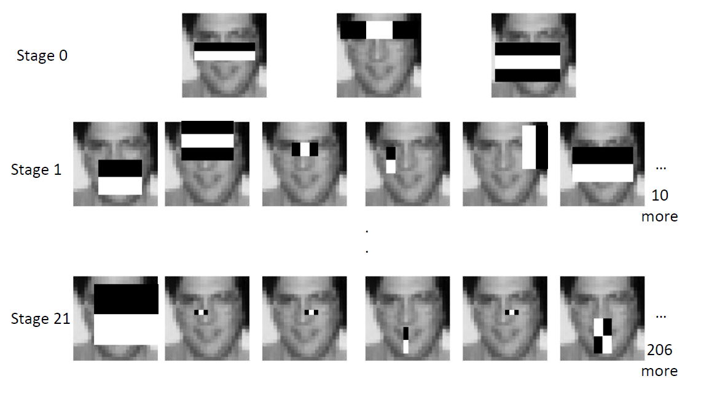

Image processing website
This website aims to demonstrate some basic image processing algorithms. It will show how they manipulate images, explain what they are and how they're used in different imaging applications. You can click the algorithms link or here to go to the algorithms page. Otherwise continue reading to get an overview of image processing.
Image Processing
Image processing is a field in software development that is concerned with the manipulation of images. At it's most basic, it's about using different algorithms to extract information about images or modify them into more useful forms.
Image Processing Applications
Image processing is involved in some shape or form whenever digital images are being handled. Before images are displayed on any screen or device, the image is manipulated by the monitor or the gpu. When a camera takes an image, it does its own processing on the image for final viewing by the user. Image editing is closely related to image processing; sometimes they are used intechangeably depending on the context. Image editors use image processing algorithms to modify images to make the more image more pleasing or becomes someone's creative vision.
Feature extraction is an important application of image processing. It can be used to find corners in an image, find different features of a face using only the difference in luminance between different parts of a face. Object features detection are usually used in object detection machine learning algorithms for different kinds of image classification. A popular use of feature detection in computer vision are happens in face detection. Haar like features are used in face detection applications using the viola-jones object detection framework. The algorithm goes through the image uses haar like features to train a learning algorithm.
Examples of simple processing algorithms used in image editing are exposure compensation, contrast, and color saturation adjustments.
Although primarily used in video, there are is an image processing data structures called waveform. This is similar to an image histogram but provides more information, however is more computationally expensive to create.
Autonomous vehicles need capture the environment around them, and gather information using different image processing techniques in order to make decisions in real time. Autonomous vehicles must extract a myriad of information as it moves through its environment. One important data point it has to acquire is where the lane boundaries are. If it were on a multilane highway, it might do this by finding lines on the roads in front of the camera facing the incoming road. Here is a video of someone's attempt at lane detection:
There are a plethora of other applications using image processing to make the most out of image data. A list of other applications can be found below.